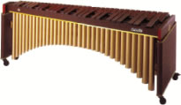

マリンバと読む。40年ほど前、東京で見た喫茶店の名前である。名前の横には「麻雀の麻、競輪の輪、競馬の馬」とあった。たぶんマリンバという楽器の名前をもじったと思われ。
マリンバ
麻雀は金を賭けてゲームされることが多い。そこで世間ではギャンブルという認識があるのもたしか。しかし競輪／競馬という公営競技と肩を並べるか云えば、ちとおそれ多い。競輪／競馬と肩を並べるとすれば、やはり競艇では。いっそのこと艇輪馬（テリンバ）という喫茶店がでも造ろうか。
普通 麻雀が比較対象とされるのは、同じ室内ゲームである囲碁／将棋。この囲碁／将棋には立派なプロ世界があり、プロ棋士が存在する。そこで麻雀も囲碁／将棋と同様のプロ世界／プロ棋士を指向する動きがある。しかしこれが
なかなかムズカシイ。
囲碁／将棋にはいくつかのタイトル戦がある。いずれも新聞社などから千万単位の賞金が提供される。しかし偶然性の強い麻雀というゲームに、そんな莫大な賞金が提供されるとは考えにくい。なんの賞金も無ければ、大王戦とか帝王戦というようなタイトル戦で優勝しても精神的にうれしいだけ。極端な話、一般麻雀愛好家にしてみれば、「○○プロが大王戦で優勝」という話を聞いても、「あ、そう...」という感じでしかない。
たしかに麻雀にも技量の巧拙はある。しかし少なくとも百ゲーム単位なら いざしらず、10や20ゲームの短期戦では、かなり偶然性に左右される。かと云って一つのタイトルの決勝戦を３百ゲームも５百ゲームもやるわけにはゆかない。もちろんどんな短期戦でも優勝するのは大いに素晴らしい。しかしなんの金銭的対価も存在しないのではプロの世界という話ではない。
かと云って参加者自身が参加費を支払い、それを優勝者または成績上位者の賞金に充当したりすれば、いまの法律では後ろに手が回る。仮に法律上の問題を
クリヤーできたとしても、それでは参加者自身が持ち寄った金のぶんどり合戦するだけの話。
そこでムサシは考えた。
そもそも短期戦ではきわめて偶然性に左右される麻雀というゲームを、短期戦でも実力勝負といえる囲碁／将棋と同様の形態に持ってゆこうとすることにムリがある。たとえ規模は異なっても、モデルとすべきは競輪／競馬の世界。
そこでσ(-_-)が考える麻雀のプロ世界。
まず日本麻雀振興会（通称NMS）=仮称 という組織を設立する。財団方式とするか、別形態の法人方式とするか、あるいは行政上の認可問題など面倒なことはσ(-_-)以外の人が考える(>_<)
たとえどんな形の組織になろうと、理事長はσ(‾＾‾） and 給与は お手盛り(^-^； 。
選手は肩書き/年齢/性別に関係なく、NMSの選考試験をクリヤーしたプレーヤー。選考試験をクリヤーしたプレーヤーは、自動的にプロプレーヤーとなる。もっともいくら「年齢に関係なく」と云っても、さすがに18歳未満はダメかもしんない。
１ゲームは半荘戦というかショートレンジ戦を１ゲームとし、１戦ごとに勝敗を決める（トップ＝勝）。１ゲームごとのトッ賞金が、プレーヤーの主な収入源となる。プレーヤーは１ゲーム１ゲームが賞金＝収入に直結するので、自ずから超真剣なゲームが展開される。もちろん獲得賞金の多いプレーヤーは文字通り麻雀で食える。いや、単に麻雀で食えるというだけではない。賞金王
あるいはタイトルホルダーともなれば、精神的にも金銭的にも充足される。
ゲームは１日10ゲーム程度をネットで放映（土日祭のみ開催）。各ゲームごとに単勝／連単の２種類の雀券をネットで発行する。半荘戦なので１ゲームは30分ほど。１ゲーム終わるごとに次回の雀券をネットで販売。どれだけのプレーヤーが選考試験に合格するかも分からない。また当初は雀券の発売数も少ないかもしれない。そこで最初のうちは通常の１ゲームのトップ賞金は数万円ほどか。しかし月に１回ほどは複数回ゲームによって結果を出すとかチーム戦などによる高額賞金ゲームも行う。また半年に１回ほど、賞金額上位者だけによる高額タイトル戦を行うのもいい。
参加選手名は、あらかじめネットで告知。ファンは、それによって登録済みの電子マネー？で好みの選手の雀券を購入する。売り上げの75％を的中者に配当（電子マネー口座に自動的送金）、25％はNMSの運営資金andトップ者への賞金に充当。
また麻雀世界では過去に不適切なアガリ見送り、抜き打ち放銃など八百長問題が取りざたされたことがある。もちろん八百長が取り沙汰されたのは麻雀世界だけの話ではない。しかし関係者だけが見守る部屋で行われるゲームでは、そういう問題も起きやすい。しかし雀券を購入した大勢のファンがリアル画面で一摸一打を見守る状況であれば、そういう問題も起きにくい。
問題点は「NMSの法的認可、NMSの設立資金、試験に合格する選手が集まるか」という点にあるような気がするが、はてこの初夢、どうなもんだろう？。
|